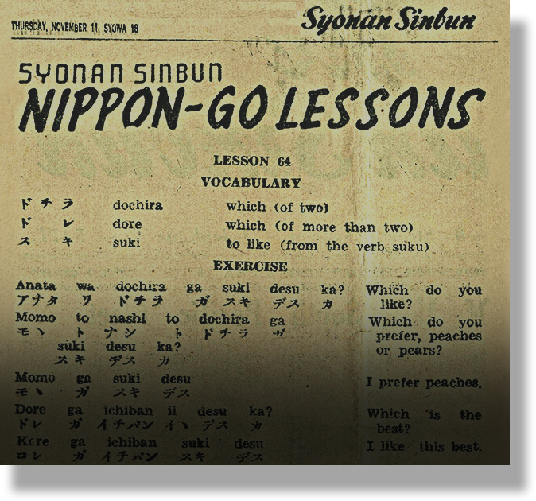
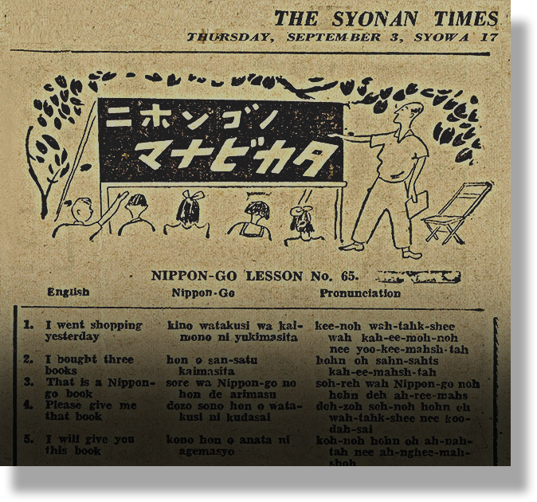

School Life Under Japanese Rule: The Nippon Spirit
Our current school curriculum has evolved a long way from what it used to be. During the Japanese Occupation, lessons were worlds different.
With Japanese troops nearby and already capturing our neighbouring countries (like Thailand), a harrowing fear lingers in the air. Monday they were in Perak, Tuesday in Penang and now in Kuala Lumpur, war was right at our doorstep. The saying, “tomorrow is never promised” has never felt more true, as savouring every last possible second of freedom feels only stifling. No one really dares to verbally admit it, but everyone knows Singapore is about to face an impending doom.
So in preparation for the growing military threat and increasing number of air raids, schools and students hurriedly prepare for the war to come. Curriculums shift to air drills, how to recognise bombs and how to administer basic first aid, as many schools, including mine, soon convert into air raid shelters and makeshift hospitals.
Students also had to participate in air raid drills in school. Mani Letchumanan Masillamani recalled practising such drills after war was declared in Europe in 1939. However, those drills seemed a bit… half baked as it changed over time. Initially, everyone would go to the edge of the classroom and lie down with the head touching the wall, legs turned facing up. Mani Letchumanan Masillamani described “Then we were asked to put the hand like that [over forehead and eyes]… One month later, they changed the thing. Now what happened, they say, ‘You must face down’.”
Masillamani also remembered that his school was collecting used exercise books and how that meant forgoing the kacang puteh he used to get in exchange for them. “[T]hese all were all given away to them for collection, will be used as material, useful material, as part of the war effort… In those days, we sell it to the kacang puteh [peanut] man, he will give you one packet of kacang puteh in those days.”
Soh Chuan Lam, a Standard VII (equivalent to Secondary 2) student at St Joseph’s School helped to scavenge for scrap iron amidst war efforts. He quoted, “[T]here was a shortage of iron…. So on certain days of the week, we were allowed to leave the school and go around collecting scrap iron and took them to the school for the government to take them away.”
Modern day would say allat was manifesting for the war to actually happen, because our worst nightmares turn into a reality overnight. In less than a month following the occupation, my home is already reshaped from inside out, with even buildings and roads renamed with Japanese, as if it’s the Japanese’s little Sims 4 save, just contaminated with a shit ton of violent, unhinged mods from shady sites.
New schools, new language, new values, all similarly applied across Japanese-occupied territories like a control D. Japanese is now the default language, and if I want to keep my life, I better start learning it. I heard that other regions like China and Korea are captured under Japanese rule too. Iit seems like a whole new Asia is being built and assimilated into one, one where everyone will work, think, and speak as one. They even have a name for it. Hakko Ichiu. Universal brotherhood… This is beneath the bare minimum of brotherhood but ok.
And where is the best place to begin their indoctrination.. or shall we say, Nipponisation? That’s right, in schools. Think of Nipponisation as the Japanese trying to make us act and think more like them and embody their 'superior' Japanese spirit. Japanese is now an official subject. Schools are revamped into propaganda centers designed to instill Japanese values and loyalty to the Emperor.
As the Japanese tighten their grip over English, Malay, and Chinese schools, they have also set up a handful of Indian “national” schools. But calling it a school is subjective, I’d argue, as my friend, Harsh, is one of the students there. I heard most teachers there are barely qualified, and really, more like a propaganda centre dressed up in a uniform, for the Indian independence movement. Mum explains it quietly, that the reason lies with the Japanese wanting to support the anti-British sentiments in India.
Primary schools can now only use Japanese or Malay, with the abolition of the use of English, Dutch, and a ban on Chinese for the time being. However, teaching in Malay is still allowed in Malay schools since it is our native language, quick, everyone, thank the Japanese now!
Teachers aren’t spared as they are required to learn Japanese as well. The local teachers are viewed with great importance, a “spiritual misogi (washing away of impurities)” that “eliminates the materialistic and individualistic western way of life that had stained the indigenous culture, and that would generate an oriental morality based upon seishin (the spirit of the imperial way).”... All that yappa but basically some cult prophecy. Pa’s friend is a teacher.. Well, an ex-teacher. She struggles with the language and thus got dismissed by the Japanese. Those who lack competency or refuse to learn the language often meet the same fate.
So the whole idea behind these new education reforms is that by learning the Japanese language, it helps instill more discipline, obedience, and cooperation amongst the people. Dedicated language institutions like Syonan Nippon Gakuen are being established to provide students of any different ages and jobs with intensive Japanese language and cultural indoctrination. Its three-month curriculum is designed not just to teach Japanese, but to inculcate what the Japanese call the "Nippon Spirit".
Like most parents right now, Ma and pa are faced with a dilemma: send me to a Japanese school or risk receiving reduced food rations. There are even benefits that come with the former as its meritocracy rewards those who excel in Japanese with potentially extra allowances. In such a system, one is either rewarded for collaboration or punished for resistance.
Pa traces around the living room, head hanging down and eyes darting everywhere but me. Ma holds me by my shoulders and looks at me with pitiful teary eyes. Barely coherent, she explains that for a chance for our family to survive, she has no choice but to send me to one of the Japanese schools. Numb by all that has happened the past few months, I bite back my tears and nod.. Not like we have a choice anyway.
But on my first day at school, English is surprisingly still allowed.. a lil utopian. Hearsay there is a shortage of teachers and textbooks, so we make do until the textbooks arrive a few months later.
It has become a practice that every morning, students and teachers have to assemble, facing the direction of the Imperial Palace. We all bow deeply while singing Kimigayo, the Japanese national anthem, while the Japanese flag is being raised. As I sing, all I can feel is shame in some humiliation ritual, forced to recite an anthem of a country I have no attachment to, and if anything, just hatred towards.
When classes properly begin, it dawns on me that the former British curriculum, which emphasised academic subjects, is done away with. The focus now is on character and skill-building. There are dedicated lessons on gardening. Basic knowledge, practical skills, the spirit of labour, self-sacrifice. Intellectual education is quietly shoved away.


Very quickly by March 1943, there are now six technical schools in Syonan-to. The medical college in Tan Tock Seng Hospital and two teacher training schools have also reopened. Pa’s cousin, uncle Siok is currently undergoing a six month course at the naval construction and engineering centre. But he complains that half the time is devoted to learning Japanese. Even in such technical institutions, the curriculum stacks language training, propaganda, and crash courses designed to meet wartime needs.
The teachers’ training colleges and the leading officials training institute are no different, also infamous for the hours spent on teaching Japanese, “nippon (Japan) spirit”, military arts, and gardening.
Japan’s national holiday is now an official celebration as we are forced to participate in a ceremony, bowing in the direction of the imperial palace, shout three cheers for the emperor, and sing the kimigayo (Japanese national anthem). And on December 8 we are to listen to the declaration of war on the allied powers. All this is meant to make me feel a stronger sense of belonging to imperial Japan.
Kor is enlisted under the Syonan Koa Kunrenjo (Asia Development Training Institute), in which trainees between the ages of 17 and 25 are trained for six months. He laments that days are just repeated routines of rigorous physical and spiritual training along with language study. The day after Kor’s first commencement exercise, he calls home and boasts on and on about how
Watanabe is visibly impressed with their spiritual discipline and vigorous physical appearance. I listen and say nothing. I suppose that just emboldens Watanabe to keep going at his wet dream: training young men toward a single common objective, rebuilding a war-torn society. War-torn, why is it war-torn again?
Countless things have changed. And just as I think everything familiar is gone, the Japanese always manages to surprise me with something else. The Japanese have taken full authorisation over the radio station and renamed it Syonan Hoso Kyoku (‘Light of the South’ Broadcasting Corporation).
Radio was supposed to spread information to the masses. Now its purpose is to control what the masses know. Led by the Japanese NHK (Nippon Hoso Kyokai) staff, who accompanied the army in their southward advance, the station airs news of Japan’s war victories in local languages, Japanese language lessons, instructions on the proper show of respect for the Japanese flag and anthem, Japanese music, and Radio Taisho - upbeat music that accompany mass exercise drills. Yo chill… Japan’s entire personality is now Japan, literally. Not even Sukiyaki or Hojicha no more.
Allied news is heavily suppressed as a few of Pa's friends got caught listening to foreign stations in secret and discussing outside news. They got arrested. Never seen again. Unless, of course, you're sneaky enough. Ma's friend hides a secret radio in the ceiling of her home, connected to earphones at all times. And everyday at about 10pm, when everyone's asleep, she secretly brings down the radio for a listen. Only Ma and a handful of close, trusted kakis, are let in on such a deadly secret. Whenever they meet, greetings are replaced with hushed whispers: "What did you hear this week?" Trusted is the keyword as if one of them turns out to be working as an undercover spy for the Japanese, you're as good as dead. Cause of death: waterboarding. Place of death: YMCA, the Kempeitai's headquarters.
Nipponisation seems ALMOST synonymous with Communism to me. Japan may not be a Communist state, but the forced indoctrinations, loyalty rituals, and tortures disguised as punishments, reek of authoritarianism.